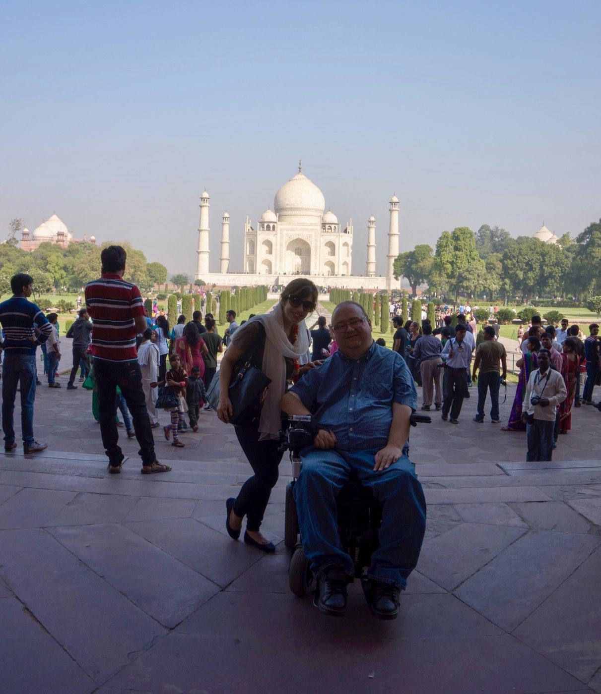

Access Insights
Case Study: The Connected Wheelchair
Innovation shaped by lived experience, proven in practice. In 2014, our chairman of the board and partner Pete Denman led the Intel project that asked what a power wheelchair should know about the person living in it. The answer became a public proof of concept endorsed by Stephen Hawking, and a pathway that is still creating opportunity today.
Intel's official film on the Connected Wheelchair Project, featuring Stephen Hawking's endorsement. The proof of concept grew from the research and intern program Pete Denman led. Watch on YouTube
"This is a great example of how technology for the disabled is often a proving ground for the technology of the future."
- Role
Design/research lead and mentor to five interns
- Organization
Intel Corporation
- Timeline
2014, research to public debut at IDF
- Legacy
Inspired Kalogon's smart pressure-relief cushion
The challenge
A life runs through this machine. It was a dumb device.
A power chair is its rider's primary transportation. It is pedestrian sized, typically tops out around 7 mph, carries a 24 volt power hub with roughly a 10 mile range, and charges overnight. All of that capability was in daily use. What was missing was awareness: the chair had no way to monitor the things its rider cannot see, understand, or deal with on their own. It could not tell whether its rider was safely in it, what the seat was doing to their skin, or whether help was needed.
Intel asked what would happen if the wheelchair joined the Internet of Things. The harder question underneath: of everything a chair could sense, what actually matters to the person living in it, and who needs to be in the room to know?
Approach and build
Research with the people who live it
Pete conducted research with many other people who use power chairs, mapping who riders are, the environments a chair moves through, the known failure points, and the shape of daily life. His own lived experience, as a disabled, dyslexic designer whose chair is his primary transportation, informed the questions, but it was one small piece of a much larger body of work. Together that research captured what outside observers consistently miss: how small differences between caregivers become pressure injuries, what a leg bag means for the shape of a day, why a fall with a phone out of reach can be fatal, and the needs no sensor reads directly • independence • security • peace of mind for the people who love you.
Five interns, one working program
Pete led five Intel interns through the principles of designing for a user, turning the research into concrete deliverables: an attachable sensing device for existing chairs, a phone app that interprets the data, and a proof of concept aimed at real adoption pathways • riders • caregivers and providers • insurers • manufacturers.
The use case scenario
One rider. One ordinary day. Every sensor earning its place.
The research proposed the systems; this scenario puts them in order. "Marcus" is a composite rider built from the research demographics: mid 30s, a spinal cord injury, an apartment, a job downtown, caregivers morning and evening, and the chair as his primary transportation.
- 7:10 AM
Transfer and seating
Tuesday's caregiver is not Monday's. A shirt bunched at the hip, a cushion a degree off, nothing anyone can see. Pressure sensors compare the morning against Marcus's baseline and send a quiet note: pressure high at the right hip, check clothing or cushion. A fifteen second fix instead of a wound that takes months to heal.
- 8:20 AM
Leaving home
The app weighs today's route against the battery and shows where a charge or a transit backup lives along the way, before either becomes an emergency. The community accessibility map flags a buckled sidewalk another rider reported; Marcus takes the parallel street and reports a blocked curb cut back with two taps.
- 8:50 AM
The elevator
Every elevator has to be backed into or out of; so does the van and the bus ramp. From the chair there is no seeing behind. A backup camera puts the view on his phone and proximity sensors mark the door edge. He rolls back clean: no scraped frame, no bystander's shin.
- 12:30 PM
A discreet nudge
Before a long meeting, the leg bag sensor puts a quiet estimate on his phone: filling, about two hours of margin. He deals with it on his own schedule instead of guessing. The seat has been counting recline cycles and nudging him when he has sat static too long.
- 3:00 PM
The crowded lobby
A chair in a crowd gives off none of the body language people steer by, and people back into it. Proximity sensing catches a man stepping backward toward the frame and warns him with a small puff of air at the ankle. He steps aside. Nobody trips.
- 4:45 PM
The curb
A rain slick lip of asphalt, a caster off an unmarked edge, a hard jolt. Impact, tilt, and orientation sensors agree something happened, and the chair asks first: are you okay? Thirty seconds to cancel. Marcus taps it away. Had he not answered, his location and status would already be with his caregiver and his contacts.
- 6:30 PM
What the evening knows
All day the health monitor watched for signs of autonomic dysreflexia, a blood pressure emergency chair users know well. Today: nothing, and that nothing is worth knowing. The evening caregiver gets a one screen summary. Marcus's mother, three states away, sees only what he chose to share: active today, home safe.
- All day
The needs no sensor reads
The research called these non quantifiable, and the scenario is built to show each one: Marcus makes every decision himself, the chair is the witness his phone could not be, and the people who love him get peace of mind without surveillance.
Behind the day seating pressure • orientation and impact • leg bag monitoring • dysreflexia watch • contextual battery • accessibility mapping • proximity awareness • predictive maintenance • a quantified self for chair users, shared on the rider's terms.
The outcome
Good research doesn't stop. It compounds.
The project mark, cut out of the background.
In September 2014, Intel unveiled the Connected Wheelchair proof of concept at the Intel Developer Forum: biometric and mechanical data streaming from the chair, and riders mapping and rating the accessibility of the places they went. Stephen Hawking endorsed it on stage. Intel's CEO told the audience it would probably never be a profit line, and that it was the right thing to do. Wow, was he wrong. And Professor Hawking, as usual, was right.
Among the five interns was Tim Balz, who had founded a nonprofit in high school refurbishing donated power chairs. After the internship he went to work as an engineer at SpaceX, and later founded Kalogon, whose Orbiter smart cushion senses seating pressure and automatically redistributes weight away from at risk areas, the very need the 2014 research put near the top of the list. It won Most Innovative Product in Accessibility at CES 2023 and raised a $3.3 million seed round.
Hawking wasn't making a prediction. He was naming a pattern he had watched play out for decades, and Kalogon is its latest example. The company's smart seating now sells well beyond disability: to pilots and drivers, to furniture manufacturing, and to the U.S. Air Force, which awarded a $1.2 million contract to adapt the cushion for bomber and missile crews seated through 12 hour missions. Technology built for wheelchair users first, once again the proving ground for the technology of the future.
- Research with chair users
- Intern program
- IDF 2014 debut
- SpaceX
- Kalogon
The recognition came quickly too. In November 2014, two months after the Intel Developer Forum, Pete presented the work in New Delhi at "From Exclusion to Empowerment," UNESCO's international conference on ICTs for persons with disabilities, speaking for Intel on the project Hawking had endorsed. The conference produced the New Delhi Declaration on inclusive technology. UNESCO then offered him a contract of his own, and he took a sabbatical from Intel to spend the summer of 2015 working from their Paris office, bringing design process to their accessibility and open learning programs.

What this case proves
The same pattern, built to repeat.
The Connected Wheelchair followed the arc Access Insights now exists to run deliberately: begin with the community's lived experience, involve them as cocreators, turn insight into evidence and working prototypes, validate with the people affected, and give the results a real pathway into the world.
It produced a public demonstration, a career pathway, and a company improving lives. That happened once, inside one corporation, because the right people were in the room. We are building the infrastructure to make it happen again and again, in the open, with disabled people holding influence over what advances.
Fund a study, co-develop a prototype, or validate an emerging technology.
hello@accessinsights.net
Sources: the 2014 research notes and program materials, public press coverage of the Intel Developer Forum 2014 proof of concept, and public reporting on Kalogon.